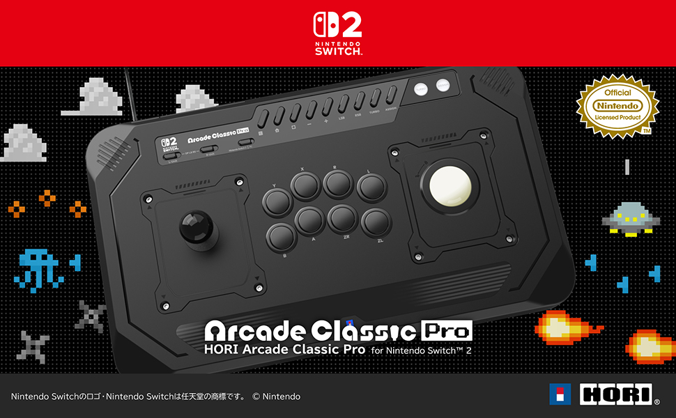
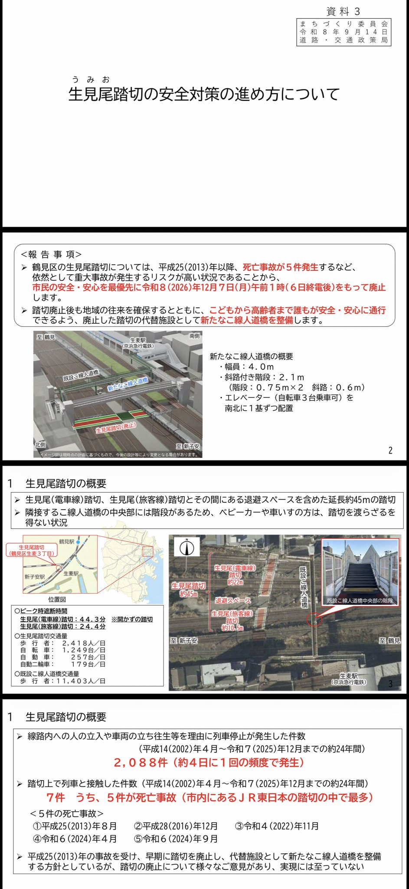
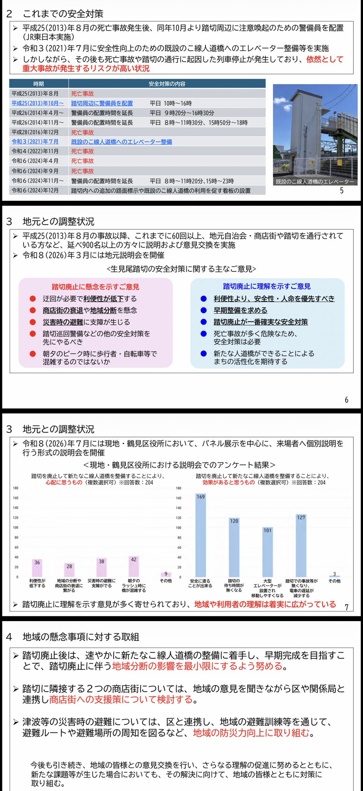
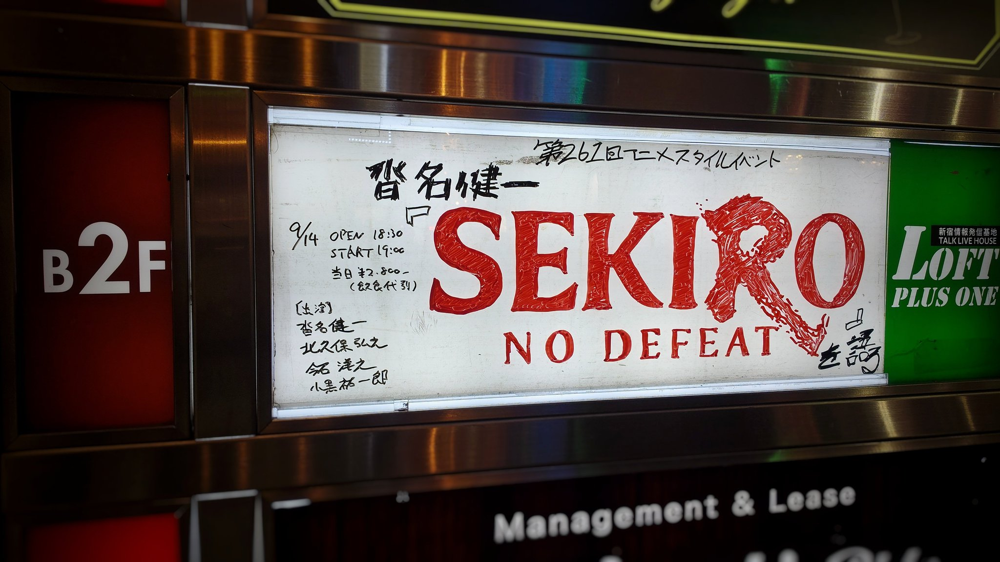

これ不思議だよな…
タイムライン要約
今日のまとめ
以下のタイムラインの要約を3-5つの箇条書きで示します。
* **AIの安全性とアライメントへの懸念:** DeepMind元研究者から「AIが人類を殺す可能性」が示唆され、AIの進化にアライメントが追いついていない現状、およびAI減速と透明性の必要性が指摘されています。
* **メディアにおける女性の表象とクリエイターの傾向:** 男性キャラクターをメインで描く女性イラストレーターの存在、女性作家による美少女描写の偏り、そして「現実の女」と比べてコスパが高いとされる「表象の女」がジャンルを飽和させている状況が語られています。
* **ゲーム・アニメ関連の動向と舞台裏:** Switch向けの特殊な入力デバイス（スティック、トラックボール、パドル、ループレバー）対応ジョイスティックの登場、アイドルマスターSideM劇場版の上映、およびアニメ「SEKIRO: NO DEFEAT」制作の難しさやクリエイター間の議論が紹介されています。
* **社会インフラと地域・大衆文化の話題:** 東海道線の「生見尾踏切」の廃止決定による遅延解消への期待、Suicaのペンギンの引退に伴うラッピング自販機の登場とその感動が伝えられています。
* **AIの安全性とアライメントへの懸念:** DeepMind元研究者から「AIが人類を殺す可能性」が示唆され、AIの進化にアライメントが追いついていない現状、およびAI減速と透明性の必要性が指摘されています。
* **メディアにおける女性の表象とクリエイターの傾向:** 男性キャラクターをメインで描く女性イラストレーターの存在、女性作家による美少女描写の偏り、そして「現実の女」と比べてコスパが高いとされる「表象の女」がジャンルを飽和させている状況が語られています。
* **ゲーム・アニメ関連の動向と舞台裏:** Switch向けの特殊な入力デバイス（スティック、トラックボール、パドル、ループレバー）対応ジョイスティックの登場、アイドルマスターSideM劇場版の上映、およびアニメ「SEKIRO: NO DEFEAT」制作の難しさやクリエイター間の議論が紹介されています。
* **社会インフラと地域・大衆文化の話題:** 東海道線の「生見尾踏切」の廃止決定による遅延解消への期待、Suicaのペンギンの引退に伴うラッピング自販機の登場とその感動が伝えられています。
ガチで酷すぎる戦犯をやっています
DeepMindを退職したビラル氏も「このままではAIが人類全員殺すかも」との事。AIの進化にアライメントが全然追い付いてない。AI減速と透明性でしっかりアライメントすれば対処できるだろうとの事。AI安全性の仕事してる人達ってAIが相当しょぼかった頃からAIで人類ヤバいとかずっと言ってる人多かった。
bilal
@bilalchughtai_
最近、Google
スティック，トラックボール，パドルにループレバーを付け替えられる前代未聞のSwitch2/Switch用ジョイスティックがホリから登場
https://
4gamer.net/s/G999902.2609
15038
…
もともとは特殊な入力を用いていた「アーケードアーカイブス」のタイトルを，リアルなゲームセンター感覚でプレイするのに役立ちそうだ

Torishima / INTPさんがリポスト
いや男メインで書いてる女性イラストレーターなんて無数にいるけどな
単にそれらは「女性向け」「腐女子向け」とカテゴライズされて関心が無い者にはアルゴリズムを超えて届くことはないと言うだけ
それはそれとして男メインで書く男性作家はほぼいないが女性作家の半分は美少女を描くという偏りはある
大きな夢・小さなお葬式・口には出せなかった恋
@hasegawafusao2
イラスト界隈も、無数に作家がいるのになんで９割がた「美少女」に偏ってしまうのか。不思議な時代。ファインアート超写実画界隈では髪の毛ツルツルの「清楚系」女が物憂げな顔で花にキスしてる。現代アート系ではオシャレイラストタッチで意志の強そうな目で睨みつけてればポリがコレなのである。
ポン☆潤々さんがリポスト
プロデューサー・ファンの皆さま、
#劇場版SideMFANFES_WGF
当館にて上映いたします！
近隣、幕張メッセでも大熱狂だったバトルフェスを
ぜひ劇場でお楽しみください
#SideM
#イオンシネマ幕張新都心
アイドルマスター SideM【ブランド公式】
@SideM_official
【映画情報】
◤￣￣￣￣￣￣￣￣￣￣￣￣￣
劇場版 アイドルマスター SideM
F＠NTASTIC BATTLE FES
～Who goes first～
予告映像解禁
＿＿＿＿＿＿＿＿＿＿＿＿＿＿＿◢
https://
youtu.be/XfdzSc_a8TQ
#SideM #劇場版SideMFANFES_WGF
Torishima / INTPさんがリポスト
現実の女ほどコスパの悪いものはないが、表象の女はコスパが高い。みんな美少女が好きだしなんなら美少女になりたい。
Torishima / INTPさんがリポスト
あらゆるジャンルが女の表象飽和状態となっているのは、男も女も〈女〉を愛するのを超えて、手軽な「快」のばら撒きが起こってるからに見える。
大きな夢・小さなお葬式・口には出せなかった恋
@hasegawafusao2
イラスト界隈も、無数に作家がいるのになんで９割がた「美少女」に偏ってしまうのか。不思議な時代。ファインアート超写実画界隈では髪の毛ツルツルの「清楚系」女が物憂げな顔で花にキスしてる。現代アート系ではオシャレイラストタッチで意志の強そうな目で睨みつけてればポリがコレなのである。
Torishima / INTPさんがリポスト
「あと2年ちょっと我慢すればまともなアメリカに戻って馴染みの世界がよみがえる」という賭けはさすがにもうちょっとキツそう。
Torishima / INTPさんがリポスト
【感動】Suicaのペンギン引退に伴って東京駅などに歴代広告のラッピング自販機が登場しているんですが、懐かしむペンギンがエモすぎます


自動販売機マニア（石田健三郎）
@jido__hanbaiki
Suicaのペンギンが引退するってことは、東京駅の激かわハンカチ自販機もなくなるってことですか…？
Torishima / INTPさんがリポスト
超朗報...！！
東海道線・京浜東北線・横須賀線ユーザー全員の大敵となっている、酷すぎる【生見尾踏切】が年末でついに廃止に！！
やっと動いてくれた！！本当にありがとうございます
あの沿線にはまだまだ酷い踏切はたくさんあるけど、これで東海道線の遅延が少しでも減ると良いな...


Torishima / INTPさんがリポスト
本作に対してネガティブな反応を示した人にも聞いて欲しい話がかなりあった一方で、予備知識やクリエイター側への理解がある程度ないと誤解を招きそうな（特に原作ありの）アニメ制作の難しさが垣間見えた。
Torishima / INTPさんがリポスト
今日は第261回アニメスタイルイベントへ。
『SEKIRO: NO DEFEAT』が如何にしてあのルックや演出になったのか、沓名監督のパーソナルな一面に触れながら理解が深まるトーク内容。
賛否両方の忌憚のない意見が監督経験のあるクリエイター間で交わされる貴重な場だった。
